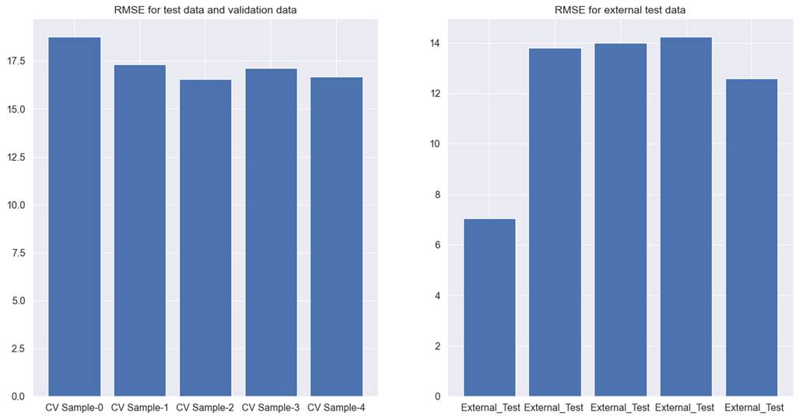
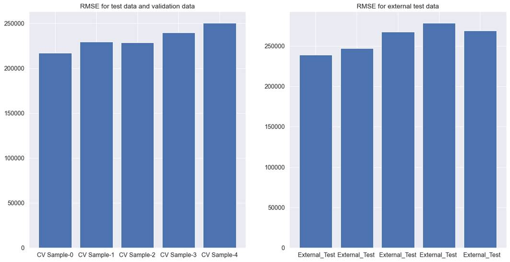
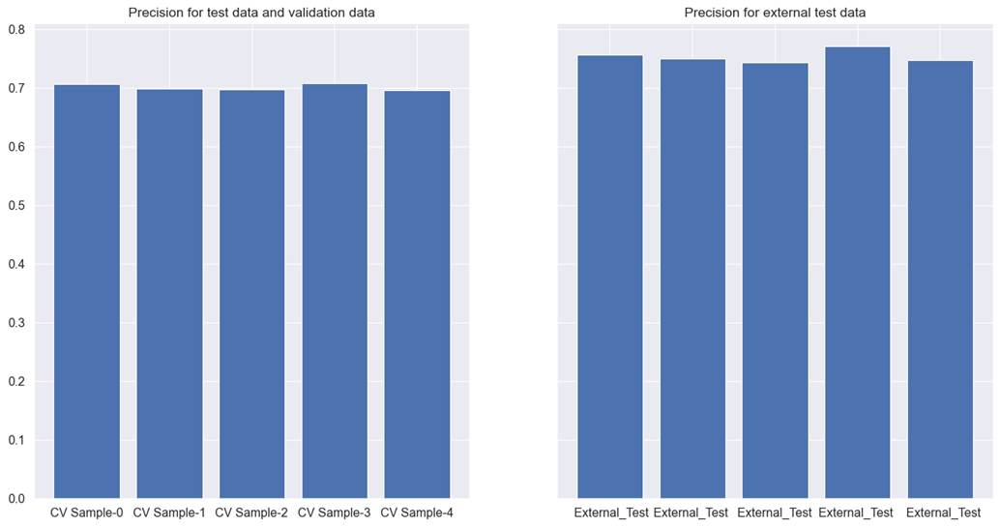

7.9: Putting Everything Together
For the 4 datasets, we will process
all the feature selection methods discussed in the book. In this section, we
will present the best results obtained for the dataset, across modeling
techniques and feature selection methods in this chapter. The best performance
will be briefly compared against the previously obtained best performance in
previous chapters, we will be performing cross-validation. The methods
discussed in this chapter return the list of features for each
cross-validation. For ease of understanding, we will look at how many features
are common across all cross-validation from among the selected features.
For the tree feature importance, we
have considered the top 90 percent of features. For linear regression, we have
kept the top 95 percent of features based on the beta coefficient.
7.9.1��� Hotel Total
Room Booking
We tried different models and
feature selection methods. For Lightgbm regression, when used with the feature
importance for 90% of top features, gave the best performance of all the
methods. For cross-validation test, and validation data RMSE was observed to be
17.9, and 12.3 for external test data. The detailed results for each
cross-validation can be seen in figure 7.9.1.

Figure 7.9.1 performance of Lightgbm
tree model with filter method for feature selection on cross-validation test,
validation, and external test data for hotel total room booking prediction
This is worse than the previous
results presented in chapter 6. In addition to this, the results are
inconsistent across different cross-validations and different test, and
validation sets. Hence, we will discard this method.
7.9.2��� Hotel Booking
Cancellation
We tried different models and
feature selection methods. Of all the methods, the Xgboost classifier, when
used with Boruta, gave the best performance. For the cross-validation test, and
the validation data precision was recorded at 0.835, and 0.881 for external
test data. The detailed results for each cross-validation can be seen in figure
7.9.2.
The results obtained are almost
similar to the results obtained in the previous chapter. Although the precision
improved very marginally, the recall worsened than previous levels. There is no
additional advantage in the results, as the model suffers from the same
inadequacies that the model in chapter 6 suffered from. In such a scenario, it
is up to the judgment of the analyst whether the solution should be accepted or
we should keep searching for other solutions. In our case, we will still like
to try feature selection using metaheuristics techniques in chapter 8.

Figure 7.9.2 performance of Xgboost
tree model with Boruta method for feature selection on cross-validation test,
validation, and external test data for hotel total booking cancellation
prediction
7.9.3��� Car Sales
Lasso regression performed the best
for car sales data. For cross-validation test and validation data, RMSE was
233161, whereas for the external test data it is 260101. It is better than the
results obtained in chapter 6.
Figure 7.9.3 shows the model
performance across different cross-validations. For the Lasso feature
selection, results between external test data and other test and validation
data are smaller than previously achieved results. It still suffers from 2
issues. Firstly, the RMSE is still higher than acceptable limits. As 200000
Indian rupees is still a very high error margin. Also, RMSE is not very
consistent across all cross-validations. Hence, we might need more improvements
to find a model with an acceptable RMSE.

Figure 7.9.3 performance of the
Lasso regression model on cross-validation test, validation, and external test
data for used car price prediction.
7.9.4��� Coupon
Recommendation
We tried different models and
feature selection methods. Of all the methods, the Xgboost classifier, when
used with the feature importance for the top 90 percent of features method,
gave the best performance. For the cross-validation test, validation data
precision was recorded at 0.700, and 0.753 for external test data. This
explains that the results are worse than the previously recorded best performance
in chapter 6. In addition to this, recall worsened than previous results to a
small extent. The detailed results for each cross-validation for precision can
be seen in figure 7.9.4.
We will like to try the
metaheuristics feature selection methods to see if these methods can bring any
improvements.

Figure 7.9.4 performance of Xgboost tree model with feature
importance feature selection for top 90 percent of features on cross-validation
test, validation, and external test data for coupon recommendation dataset.